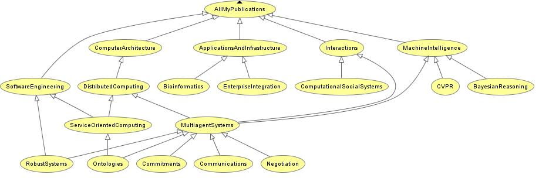

Dr. Huhns received the B.S.E.E. degree in 1969 from the University of Michigan, Ann Arbor, and the M.S. and Ph.D. degrees in electrical engineering in 1971 and 1975, respectively, from the University of Southern California, Los Angeles.
Before becoming a professor of computer science and engineering at the University of South Carolina, he conducted research on the Argo, Antares, RAD, Carnot, and InfoSleuth projects at the Microelectronics and Computer Technology Corporation as a Senior Member of the Research Division. He was also an adjunct professor in computer sciences at the University of Texas. Prior to joining MCC, he was an associate professor at the University of South Carolina, a research assistant in image processing at the University of Southern California, and a radar systems engineer at Hughes Aircraft Company.
Besides being a Fellow of the IEEE, Dr. Huhns is a member of Sigma Xi, Tau Beta Pi, Eta Kappa Nu, ACM, Upsilon Pi Epsilon, and AAAI. He is the author of over 200 technical papers in machine intelligence and an editor of the books Distributed Artificial Intelligence, Volumes I and II and Readings in Agents. With Prof. Munindar P. Singh of North Carolina State University, he has recently authored the textbook Service-Oriented Computing: Semantics, Processes, Agents for John Wiley Publishing Co. Dr. Huhns is an associate editor for the Journal of Autonomous Agents and Multi-Agent Systems, and IEEE Internet Computing. He is on the editorial boards of the IEEE Transactions on Mobile Computing, International Journal of Cooperative Information Systems, Journal of Intelligent Manufacturing, and Journal of Emerging Mechanical Engineering Technology. He is a founder and board member for the International Foundation for Cooperative Information Systems and the International Foundation for Autonomous Agents and Multiagent Systems. He has chaired and served on the advisory boards and program committees for numerous international conferences and workshops.
Key Publication:
Munindar P. Singh and Michael N. Huhns, Service-Oriented Computing: Semantics, Processes, Agents, John Wiley & Sons, Ltd, West Sussex, England, 2005.